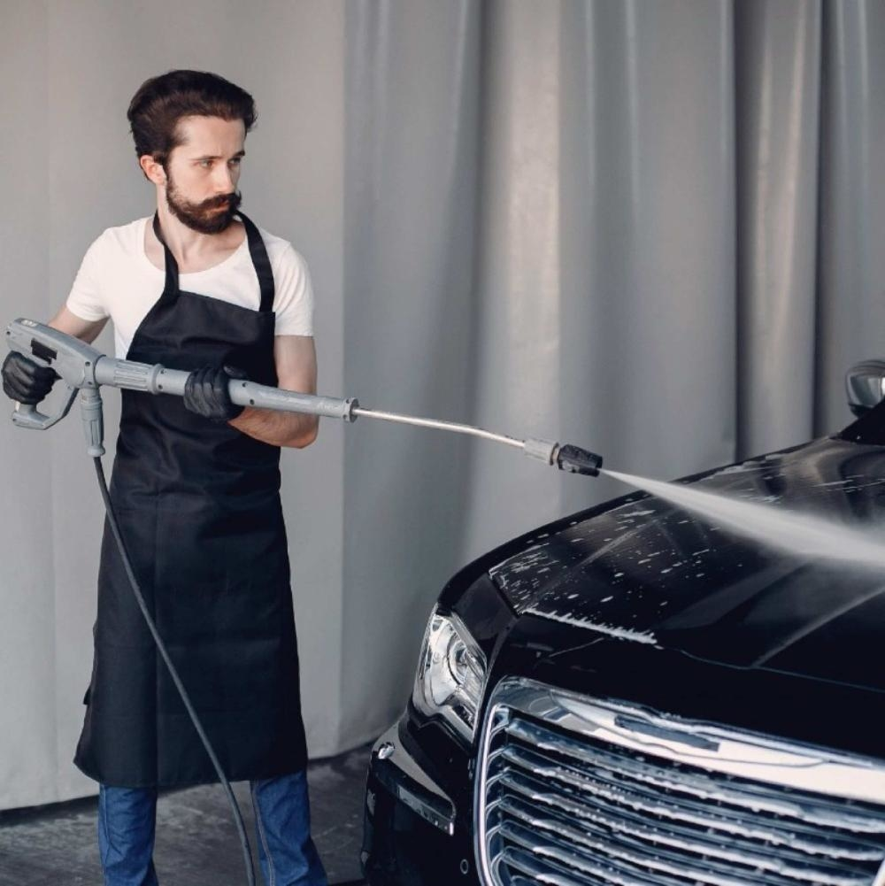
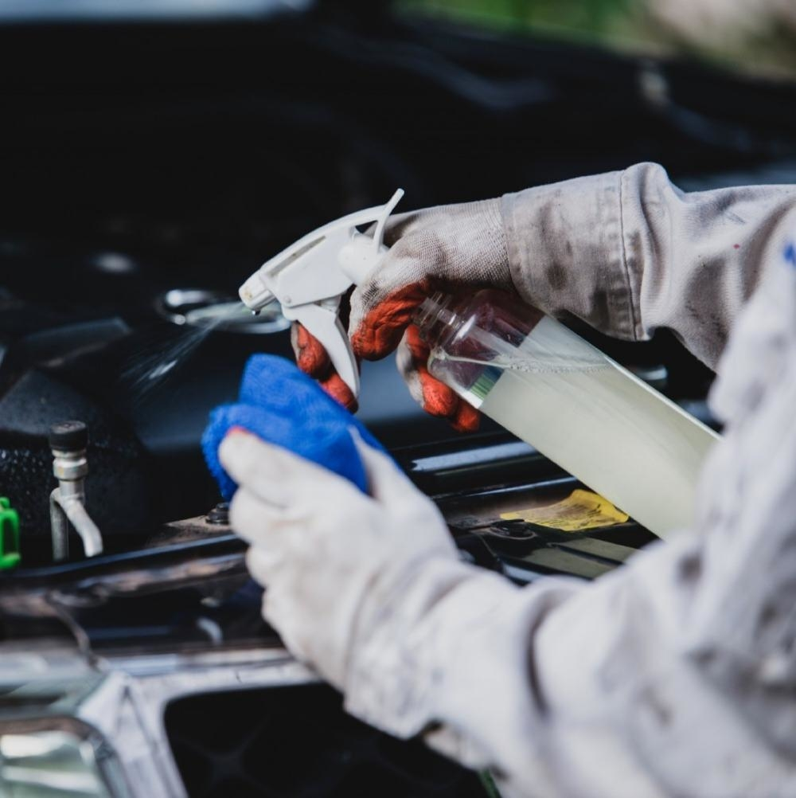
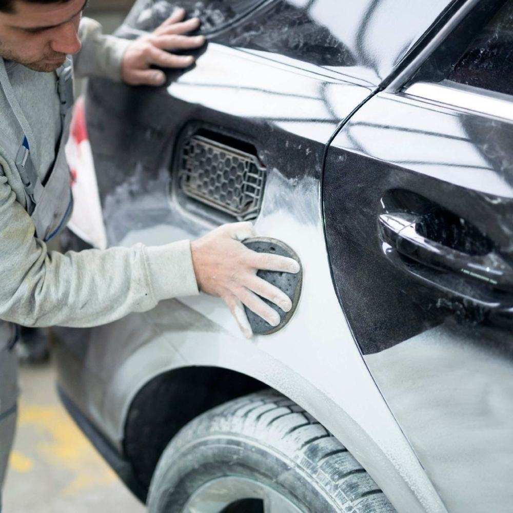

Lavado de salón
| Auto | Camioneta | Minivan | Van |
|---|---|---|---|
| s/.220 | s/.250 | s/.270 | s/.380 |
- Lavado exterior de carrocería con shampoo
- Secado con ante sonax
- Lavado de llantas y guardarnos
- Aire comprimido para exteriores e interiores
- Silicona a guardafango y partes plásticas
- Aspirado integral de salón
- Lavado de alfombra, maletera y cinturones
Desinfección
| Auto | Camioneta | Minivan | Van |
|---|---|---|---|
| s/.250 | s/.280 | s/.310 | s/.420 |
- Limpieza intensiva de todas los plásticos (consola, paneles de puertas, timón, etc.)
- Limpieza de plásticos interiores y lunas
- Siliconedo de plásticos y vinílicos
- Limpieza y siliconeado de tablero
- Limpieza de pisos y siliconeado
- Renovador y silicona a neumáticos
Tratamiento de Pintura
| Auto | Camioneta | Minivan | Van |
|---|---|---|---|
| s/.220 | s/.250 | s/.270 | s/.380 |
Revitaliza el color de la pintura, elimina rayas ligeras y micro rayas, suaviza la superficie con lo cuál el polvo no se adhiere y queda brillante como un espejo (literalmente). incluye:
- Lavado del exterior del vehiculo
- Secado con ante sonax
- Descontaminación de carrocería con wurth
¡Calidad al mejor precio!
Te brindamos el mejor servicio al mejor precio, realiza tu consulta sin costo
Realizados diversos servicios entre: Stores, Coches, Asientos de
bebe
También realizamos servicio de lavado a domicilio que consta de
aspirado con máquina profesional eliminando así todo polvo
existente, desinfección del 99.8% de bacterias, ácaros y otros
agentes patógenos con máquina de rayos UV y máquina especial de
vapor, lavado con espuma seca y desmanchadores especiales no tóxicos
y ecológicos
El servicio de lavado a domicilio consta de aspirado con máquina profesional eliminando así todo polvo existente, desinfección del 99.8% de bacterias, ácaros y otros agentes patógenos con máquina de rayos UV y máquina especial de vapor, lavado con espuma seca y desmanchadores especiales no tóxicos y ecológicos.